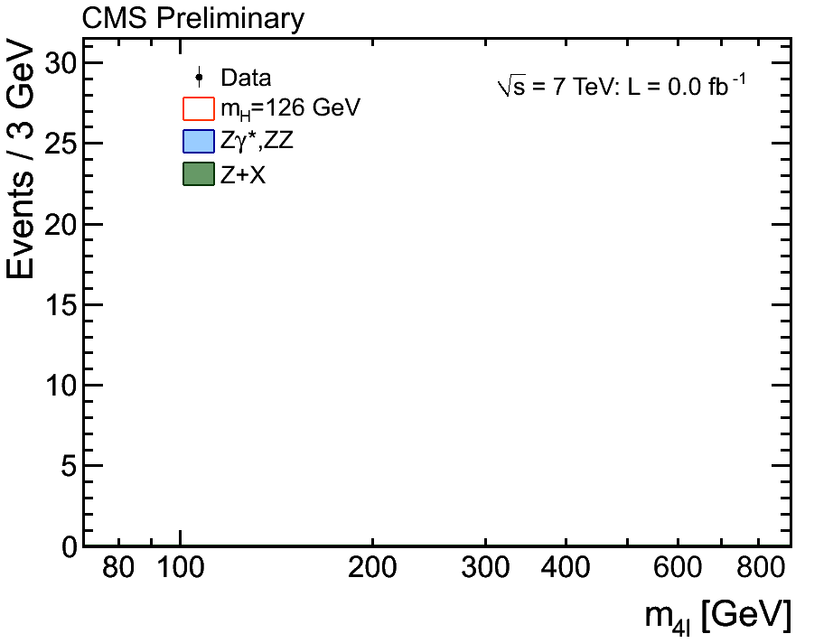

Big data leads quickly to information overload.
For handle big data, solution is very simple: buy bigger monitor and use smaller font in the terminal.
— MySQL Borat (@mysqlborat) February 25, 2013
How can we deal with this?
I’ve recently been seeing a trend towards animated visual/audio data presentation experiences. I started toying with this a few years ago around Christmas time.
They’ve recently become more popular. My band and I developed a music video of treasury data.
Küechenstudio made a podcast about some of the other recent advances in data music.
Combining data with music, specifically, may also appeal to a younger audience. Here’s a music video that the White House released to advertise the State of the Union Address. It uses pie charts and dubstep to appeal to a younger audience.
Data animations are also becoming popular in experimental physics, for both the ATLAS and CMS experiments.


Data music videos are the future.